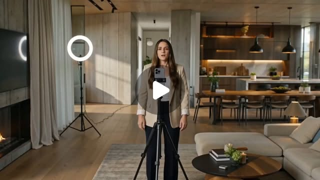

Threads｜HeyGen for Real Estate：AI Avatar 房地產行銷影片產品化

一句話摘要
HeyGen for Real Estate 把 AI Avatar 直接包進房仲影片行銷場景，讓房屋介紹、市場更新與個人品牌內容變成可模板化、可批量生成的垂直產業工作流。
為什麼保存
這則 Threads 值得放進 AI 學習雷達，因為它呈現 AI 影片工具的一個重要轉向：
- 從「任何人都能生成影片」的通用工具，轉向「某個產業可以直接拿來用」的垂直解決方案。
- 從單次影片生成，轉向房仲日常行銷內容的連續產出。
- 從單純 AI Avatar，轉向「腳本、模板、場景、品牌與發布需求」的完整包裝。
對 AI 工具觀察來說，這是典型的從 horizontal AI tool 走向 vertical workflow product 的案例。
Threads 可見重點
AI郵報貼文提到：
- 房仲可能真的要開始「不用拍片」。
- HeyGen 推出全新的 HeyGen for Real Estate。
- 產品把 AI Avatar 與房地產行銷包成一套。
- 目前主打三種房仲常用影片格式：
- 房屋物件介紹
- 區域／市場更新
- 個人品牌內容
貼文媒體看起來是影片縮圖：畫面中有一位女性站在高級住宅室內空間，前方有手機或攝影設備，左側有環形燈，右下角有靜音圖示。
產品化意義
房地產內容行銷的難點通常不只是「會不會剪影片」，而是：
- 每個物件都需要快速做出介紹內容。
- 區域行情、市場更新與政策變化需要持續解說。
- 房仲本人的個人品牌需要穩定曝光。
- 拍攝、腳本、剪輯、字幕與發布都耗時。
HeyGen for Real Estate 的切入點，是把這些重複性需求變成可套模板的 AI 影片流程。這比單純提供一個 AI Avatar 生成器更接近實際付費場景。
對房仲的可能用途
- **房屋物件介紹**：將物件資料、照片、特色與周邊資訊轉成短影音介紹。
- **區域／市場更新**：用 AI Avatar 定期說明成交行情、房價趨勢、交通與生活機能。
- **個人品牌內容**：固定產出專業觀點、買屋教學、賣方提醒與客戶常見問題。
- **多平台素材再利用**：同一段內容可改成 Reels、Shorts、TikTok、Facebook 或 LINE 客戶訊息。
實務判讀
這個案例的重點不是房仲真的完全不需要真人，而是 AI 正在承接「高頻、格式固定、需要穩定曝光」的內容生產。
房仲仍需要提供可信度、在地資訊、成交經驗與客戶關係；但大量規格化內容可以由 AI 幫忙產出初稿或成片，降低拍片門檻。
對 Hermes / AI 學習雷達的啟發
這則貼文可以延伸出幾個觀察方向：
- AI 工具若要商業化，常需要從「功能」變成「行業任務包」。
- 垂直場景會要求預設模板、素材欄位、法規與品牌風格，而不是只給空白 prompt。
- 未來 Hermes 類型的 agent 可以扮演中介：讀取物件資料、生成腳本、呼叫影片工具、整理成發布文案與客戶推播。
風險與限制
- 房地產行銷涉及真實物件資訊，需避免誇大、錯誤坪數、錯誤價格或未揭露限制。
- AI Avatar 可能降低製作成本，但若所有房仲都使用類似模板，內容容易同質化。
- 在台灣等市場，房地產廣告仍需注意法規、實價登錄、社區資訊與個資保護。
- 貼文是產品消息整理，實際功能、價格與地區可用性仍需以 HeyGen 官方頁面為準。